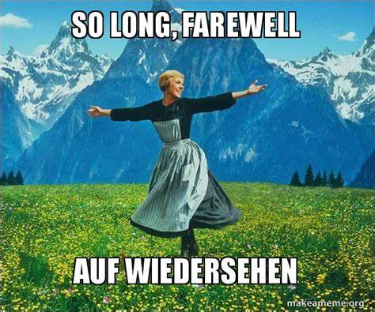

Happy Friday! Thank you very much for supporting the Daily Bulletin throughout the academic year. The project itself will continue into the next academic year, but unfortunately this will be the last cute little green Daily Bulletin you will ever see from Albert. Goodbye and thank you!
周五快乐！感谢您在整个学年持续支持每日公告。每日公告项目在下个学年仍会为大家服务，但熟悉的排版（和发件人）将与大家说再见。谢谢大家，希望有缘再会！
Important Events 重要事件
| Day | Events |
|---|---|
| Fri | EoY Report Card Release |
| End of CCA Season 4 | |
| Y11 PTSC | |
| + |
Fetched from Songjiang Student Calendar.
选自松江校区学生日历。
Delicious Dinings 今日佳肴
| Day | Taste of Asia | Eat Global | Revolution | Morning Snack | ||||
|---|---|---|---|---|---|---|---|---|
| Fri | Shaomai 烧麦 |
Custard Bun / Stuffed Sticky Rice Ball 流沙包 / 粢饭团 |
Tea Egg 茶叶蛋 |
Roasted Mushroom 烤香菇 |
Baked Egg with Cheese Sausage on Toast 芝士香肠蔬菜吐司烘蛋 |
Baked Beans 茄汁焗豆 |
Pork and Preserved Vegetable Noodles & Bean Curd 雪菜肉丝面 & 素鸡 |
Shaomai 烧麦 |
| + | ||||||||
| Day | Taste of Asia | Eat Global | Revolution | Piccola Italia | Vegetarian | Afternoon Snack | ||
|---|---|---|---|---|---|---|---|---|
| Fri | Yangzhou Pork Balls 扬州狮子头 |
Fried Egg with Tomato 西红柿炒蛋 |
Argentine Roast Beef 阿根廷烤牛肉 |
Mexican Baked Beans 墨西哥焗豆 |
Laksa 叻沙面 / 鹌鹑蛋 |
Chicken Enchiladas 墨西哥鸡肉卷 |
Vegetarian Huevos Rancheros 墨西哥红豆泥卷 |
Donuts 甜甜圈 |
| + | ||||||||
Daily Inspiration 每日灵感
Quotes of the Day 每日引言
Our obligation is to define the liberty of all, not to mandate our own moral code.
— Planned Parenthood of Southeastern Pa. v. Casey, 505 U.S. 850 (1992)
It is [the responsibility] of the institution of education, to catalyze social progress and social liberties. The tyranny of the prevailing opinion of the masses shall not be exacerbated by institutional tyranny; and if institutional tyranny in the form of government persists, it is not the role of educators to reinforce them.
— Anonymous, c. 2017
[For the reason that the prevailing/established opinion cannot be assumed to be correct, people] should be free to act upon their opinions—to carry these out in their lives, without hindrance, either physical or moral, from their fellow-men, so long as it is at their own risk and peril.
— John Stuart Mill, c. 1859
Shared anonymously.
Poem of the Day 每日诗歌
Nothing Gold Can Stay
Robert FrostNature’s first green is gold,
Her hardest hue to hold.
Her early leaf’s a flower;
But only so an hour.
Then leaf subsides to leaf.
So Eden sank to grief,
So dawn goes down to day.
Nothing gold can stay.
Shared by Albert Tan.
由谭云潮分享。
Meme of the Day 每日梗图
Shared by Albert Tan.
由谭云潮分享。
On This Day 以史为鉴
June 21: Fête de la Musique; International Day of Yoga; National Indigenous Peoples Day in Canada; Xiazhi in China (2024)
6月21日：夏至、仲夏节（北欧）、国际瑜珈日、加拿大国家原住民日
- 1575 – French Wars of Religion: Catholic forces defeated an armed group of Huguenots attempting to capture Besançon, from which they had previously been expelled.
- 1854 – Crimean War: During the Battle of Bomarsund, Irish sailor Charles Davis Lucas threw an artillery shell off his ship before it exploded, earning him the first Victoria Cross.
- 1890 – Rudyard Kipling's poem Mandalay was published.
- 1921 – Irish War of Independence: Most of the village of Knockcroghery in County Roscommon was burned by British forces.
- 1957 – Ellen Fairclough became the first woman to be appointed to the cabinet of Canada.
- 1582年 – 日本战国时代大名织田信长在本能寺遭到其家臣明智光秀率领军队围攻，被迫自杀身亡。
- 1791年 – 法国国王路易十六和玛丽·安托瓦内特从巴黎杜伊勒里宫出逃，但在阿戈讷地区瓦雷讷遭到逮捕。
- 1813年 – 阿瑟·韦尔斯利的英国、葡萄牙和西班牙联军在维多利亚战役击败约瑟夫·波拿巴的法国军队。
- 1919年 – 为了避免遭协约国扣押，德意志帝国海军上将路德维希·冯·罗伊特下令将公海舰队集体自沉。
- 2004年 – 美国工程师伯特·鲁坦设计的太空船1号成为首部私人研制且进入次轨道的载人航天器。
Births and Deaths: Niccolò Machiavelli (d. 1527); Joko Widodo (b. 1961); Kathleen O'Kelly-Kennedy (b. 1986); Soad Hosny (d. 2001)
Fetched from Wikipedia.
选自维基百科。
In the News 时事要闻
- American baseball player Willie Mays dies at the age of 93.
- In basketball, the Boston Celtics defeat the Dallas Mavericks to win the NBA Finals.
- A fire in a residential building in Mangaf, south of Kuwait City, kills fifty people.
- A plane crash near Chikangawa, Malawi, kills nine people, including Vice President Saulos Chilima.
- 在主要反对党领袖本尼·甘茨退出后，以色列战时内阁解散。
- 波士顿凯尔特人以总比分4-1战胜达拉斯独行侠夺得2023–24赛季NBA总冠军，杰伦·布朗当选总决赛最有价值球员。
- 乌克兰和平峰会于瑞士下瓦尔登州比尔根山的布尔根施托克度假村举行。
- 第50届七国集团会议于意大利普利亚大区法萨诺举行。
- 在民主联盟、因卡塔自由党支持下，西里尔·拉马福萨成功连任南非总统。
Ongoing: Israel–Hamas war; Russian invasion of Ukraine; Sudanese civil war
Recent deaths: James Kent; Sara Facio; Allan Saxe; Paul Pressler; Sreedharan Champad; Kevin Campbell
正在发生：俄罗斯入侵乌克兰；以哈战争；红海危机
最近逝世：威利·梅斯；鲍勃·舒尔；陈政高；叶惠康；尼尔·戈尔德施密特
Fetched from Wikipedia.
选自维基百科。